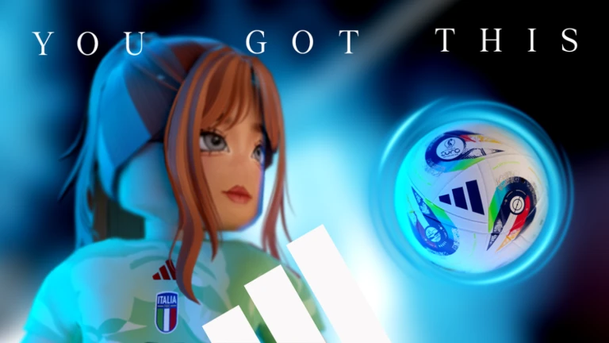
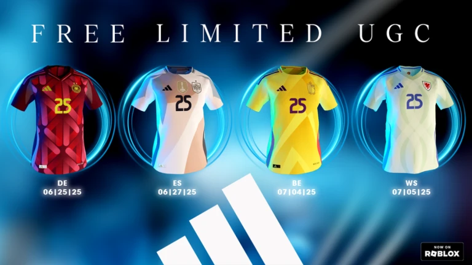

Overview
Project summary
I led programming and studio development, reusing the Rewarded Playables framework while developing unique features for this football mini game.

Lead Programmer
Rewarded Playables football mini game built from the shared playable framework with new experience-specific systems.
Overview
I led programming and studio development, reusing the Rewarded Playables framework while developing unique features for this football mini game.
Systems
Reused systems from earlier Rewarded Playables projects to support a fast branded release cycle.
Developed experience-specific gameplay for the football mini game.
Led Studio-side implementation for gameplay and release support.
Built on the short-cycle Rewarded Playables structure for a branded Roblox launch.
Media
Media example from adidas x UEFA WEURO 2025.

Media example from adidas x UEFA WEURO 2025.